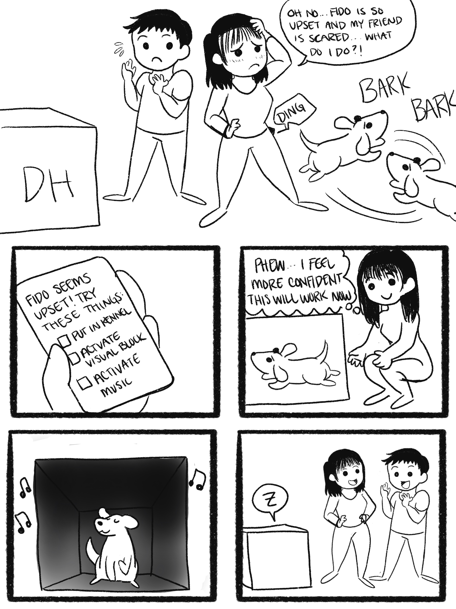

STORYBOARD + DESIGN CONCEPTION
Product needs to be educational, encourage agency, be data-driven, & adaptive
Educational and encourages agency
System should empower the user to make decisions that affect their companion and the training process rather than making decisions for them.
Data-Driven
Recommendations, tips, notifications, and other features in the system should be made based on data collected by PAWLS or from reliable outside sources.
Adaptive
The system should adjust training as dog does or doesn't show improvement
